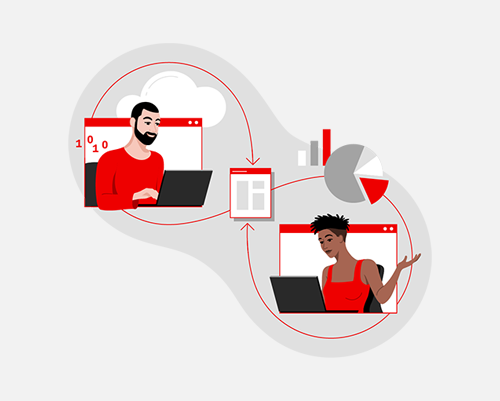

Welcome to Red Hat OpenShift Developer Workshop 2025
Welcome to the Red Hat OpenShift Developer Workshop 2025 where you’ll learn how to elevate your containerized applications development, deployment, and monitoring works with OpenShift Container Platform - The appliation platform for cloud-native applications development.
We’re glad to have you here with us! Today, we’ll explore the features and benefits of OpenShift Container Platform for streamlining your application development workflows. Build, manage, deploy, and monitor your application with one single platform.
Last but not least, you will see how to standardize your application development using the Golden Path and Software Templates Library in the Red Hat Developer Hub - an enterprise-grade internal developer portal based on Spotify’s Backstage project.

Next Steps
Ready to get started with the workshop? Let’s begin, firstly, register for the lab to get OpenShift environment you’ll be using today.